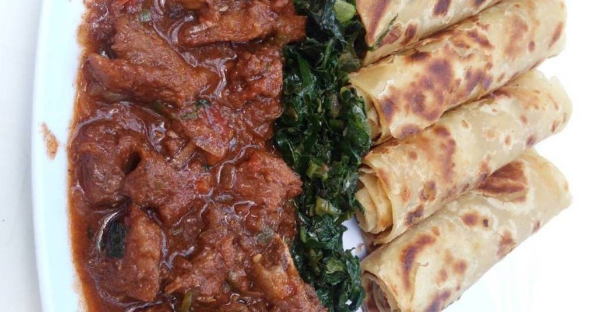

Home
Chapati With Beef Stew

Description
Let’s transform simple ingredients into pure comfort.
This chapati with beef stew combo delivers warm,
flaky bread ready to scoop up that rich, savory gravy.
Your kitchen will smell incredible in under two hours.
Ingredients
- 2 pounds beef chuck, cut into 1-inch cubes
- 4 cups all-purpose flour
- 1½ cups warm water
- 2 tablespoons olive oil
- 1 large yellow onion, chopped
- 3 cloves garlic, minced
- 2 large carrots, sliced into coins
- 2 large potatoes, cubed
- 1 can (14.5 oz) diced tomatoes
- 4 cups beef broth
- A couple of bay leaves
- 1 teaspoon dried thyme
- Salt and black pepper
- A splash of vegetable oil for cooking
Steps
- Season the beef cubes generously with salt and pepper on all sides.
- Heat 2 tablespoons olive oil in a large Dutch oven over medium-high heat until shimmering.
- Sear the beef in a single layer until deeply browned on all sides, about 3-4 minutes per side.
- Remove the beef and set aside, leaving the drippings in the pot.
- Add the chopped onion to the pot and sauté until translucent, about 5 minutes.
- Stir in the minced garlic and cook for 1 minute until fragrant.
- Return the beef to the pot along with any accumulated juices.
- Add the diced tomatoes, beef broth, bay leaves, and dried thyme.
- Bring to a boil, then reduce heat to low, cover, and simmer for 1 hour.
- While the stew simmers, combine 4 cups flour and 1 teaspoon salt in a large bowl.
- Knead the dough on a floured surface for 8-10 minutes until smooth and elastic.
- Gradually add 1½ cups warm water, mixing until a shaggy dough forms.
- Divide the dough into 8 equal balls, cover with a damp cloth, and rest for 30 minutes.
- After the stew has simmered for 1 hour, add the carrots and potatoes.
- Continue simmering covered for another 30 minutes until vegetables are tender.
- While the stew finishes, roll each dough ball into a thin 8-inch circle.
- Heat a dry skillet over medium-high heat until a drop of water sizzles immediately
- Cook each chapati for 1-2 minutes per side until puffed and golden brown spots appear.
- Remove the bay leaves from the stew and adjust seasoning if needed.
- Serve the hot stew alongside warm chapati.
A perfect chapati should be soft yet sturdy enough to scoop up the tender beef
and vegetables without tearing. That rich, slow-simmered broth clings to every bite,
creating the ultimate comfort food experience. Try tearing the chapati into pieces
and letting them soak in the stew for maximum flavor absorption.
Chapati With Beef Stew by Laura Hauser